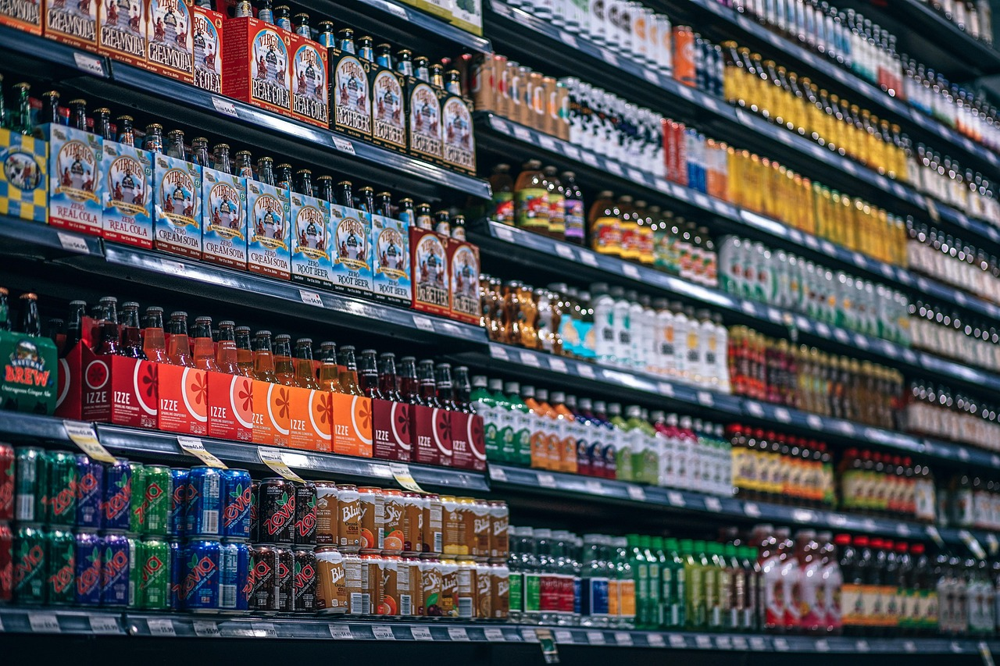
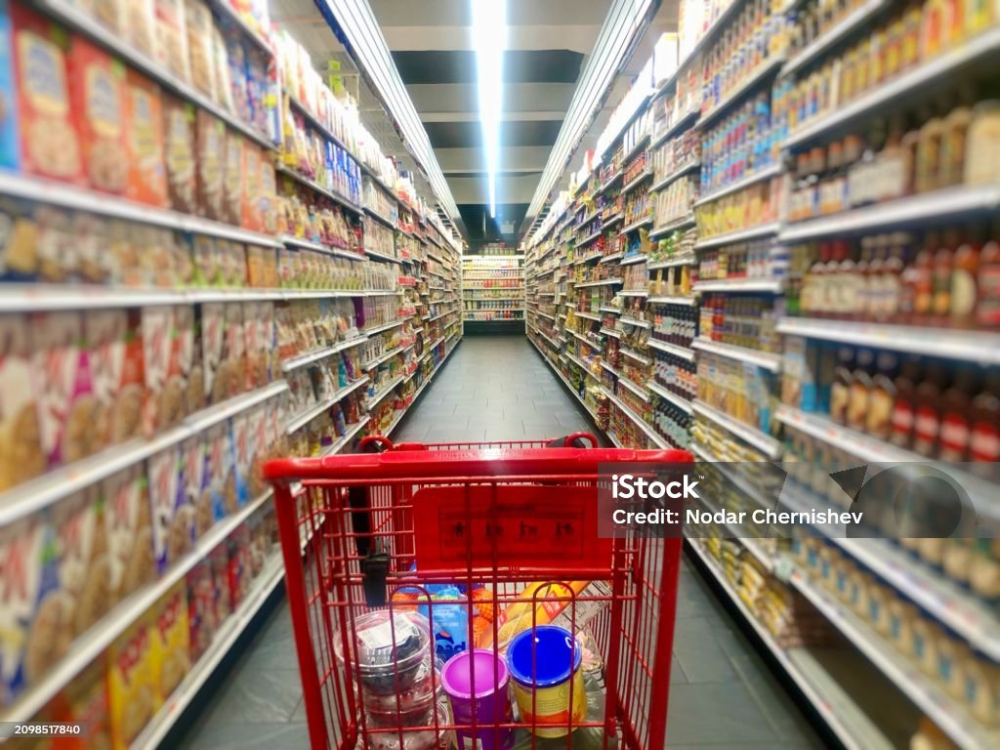

In this project, I analyzed Amazon sales data using Python (Pandas, Seaborn, Matplotlib) for data cleaning and exploratory data analysis, and created an interactive Power BI dashboard to visualize key business trends.
The analysis uncovered insights into top-selling products, revenue by city, payment method preferences, and order status distributions.
This project demonstrates my ability to work with real-world e-commerce data, perform detailed analysis, and present actionable insights using both Python and Power BI.
In this project, I performed a complete analysis of call center agent performance using real-world datasets. The process involved data validation, merging multiple files, and feature engineering to calculate important KPIs like connect rate, total calls, completed calls, average call duration, and presence flag.
The final report helps evaluate agent efficiency and highlights areas of improvement.
This project demonstrates my skills in Python (Pandas, NumPy) for real-world data cleaning, transformation, and reporting.
In this project, I analyzed Spotify song data using SQL to uncover trends in song popularity, artist performance, and genre insights.
The analysis involved data cleaning, transformation, and writing advanced queries to extract meaningful patterns from two datasets — high and low popularity songs.
Key findings included most popular genres, artists with increasing popularity, and audio features influencing song success.
This project highlights my skills in SQL, data analysis, and deriving actionable insights from real-world datasets.

This project analyzes 4 years of monthly sales data for a fictitious soft drink company, combining time series analysis, correlation studies, and adstock modeling using Excel. The study investigates seasonality, trend patterns, media impact, price sensitivity, and competitor influence on soda sales performance.
Key Highlights:
• Identified strong seasonality (higher summer sales)
• Analyzed media impact (TV, Instore, Outdoor, Digital) on sales
• Examined price elasticity and promotion effectiveness
• Conducted Adstock Transformation to account for advertising carryover and saturation effects
• Discovered competitor TV ads as a major influencer on sales decline
Techniques Used: Excel, Correlation Analysis, Partial Correlation, Adstock Modeling

This project showcases a beginner-friendly Power BI Dashboard built using the popular Superstore Dataset.
The analysis focuses on uncovering key business insights through simple and effective visualizations without using complex DAX calculations.
Key Features: Sales Trends, Top 5 Products, Profit by Region, Customer Analysis
Tools Used: Power BI
Learning: Visualization, Business Insights, Data Cleaning